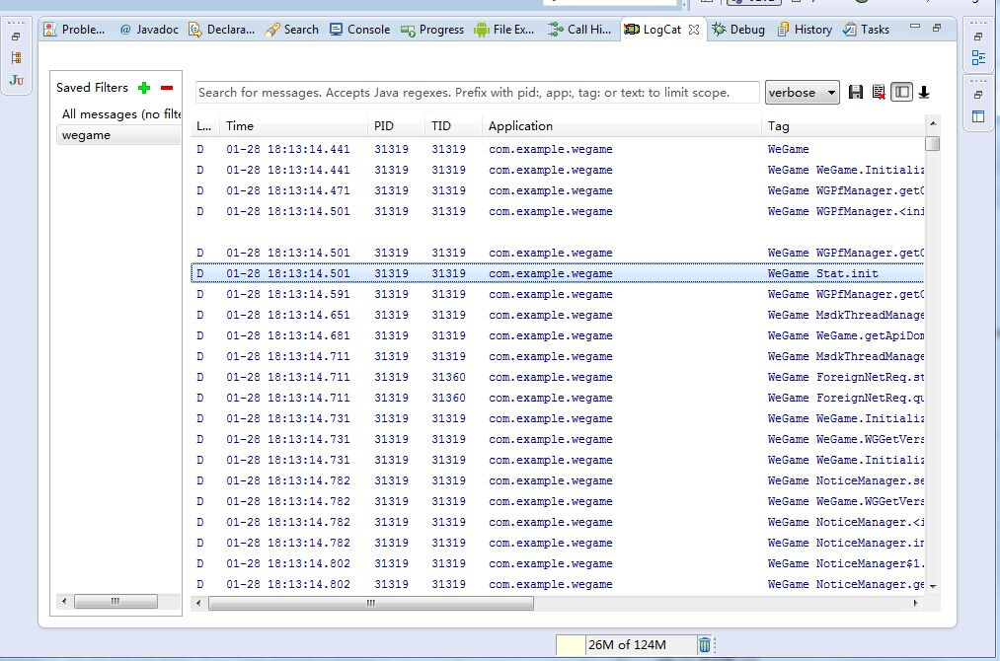

name: inverse layout: true class: center, middle, inverse --- # MSDK坑不坑～ <BR> ------ ## MSDK Android 相关问题介绍 — hardyshi --- layout:false class: ##1. 客户端开发介绍 ##2. MSDK 介绍 ##3. Android 日志抓取工具 ##4. Android 日志分析 --- ## 客户端开发介绍 ### 系统 - Android（Java / Natice C++） - IOS（Object C） - Windows phone（C#） ### 游戏引擎 - Cocos（lua/C++/JS） - Unity （C#） - Ane （Flash） ### MSDK - Android （Java / Natice C++） - IOS （Object C / C++） --- ## Android 日志抓取工具 ### MSDK日志抓取工具 - [MSDK日志抓取工具](https://github.com/bihe0832/Settings-Tools/tree/master/adb) --- ## Android 日志抓取工具 ### Eclipse 日志抓取工具  - 怎么找到、设置tag、过滤 --- ## Android 日志分析技巧 - MSDK 版本查看 adb shell am start -n com.example.wegame/com.example.wegame.MainActivity - 代码出错位置 - Java ： fatal [错误示例](http://rdm.oa.com/products?productId=9407cffd-5d9a-4cd1-afaf-d9869a570dee&model=exception&sub=issueDetailNew%3FisStatics%3Dtrue%26target%3Dnew_rdm%26productId%3D9407cffd-5d9a-4cd1-afaf-d9869a570dee%26platformId%3D1%26mergeId%3D60008001%26packageId%3Dcom.example.agsdkdemo%26buildId%3D%26imei%3D%26contact%3D%26detail%3D%26os%3D) - C++ ：SIGSEGV [错误示例](http://rdm.oa.com/products?productId=8460fead-1648-4755-a796-ba49f1c1736b&model=exception&sub=issueDetailNew%3FisStatics%3Dtrue%26target%3Dnew_rdm%26productId%3D8460fead-1648-4755-a796-ba49f1c1736b%26platformId%3D1%26mergeId%3D60357562%26packageId%3Dcom.tencent.xjcard%26buildId%3D%26imei%3D%26contact%3D%26detail%3D%26os%3D) ## Android 日志分析高阶 - [adb shell](http://blog.bihe0832.com/adb-advanced.html) --- template: inverse # Q & A --- template: inverse # 谢谢大家！